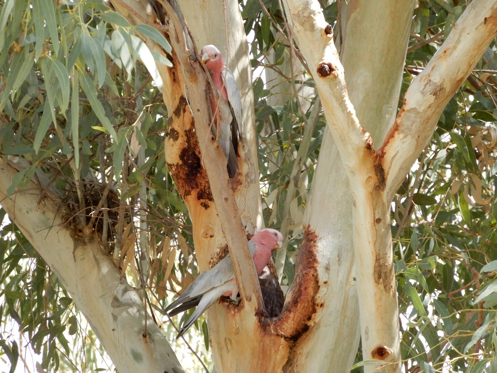
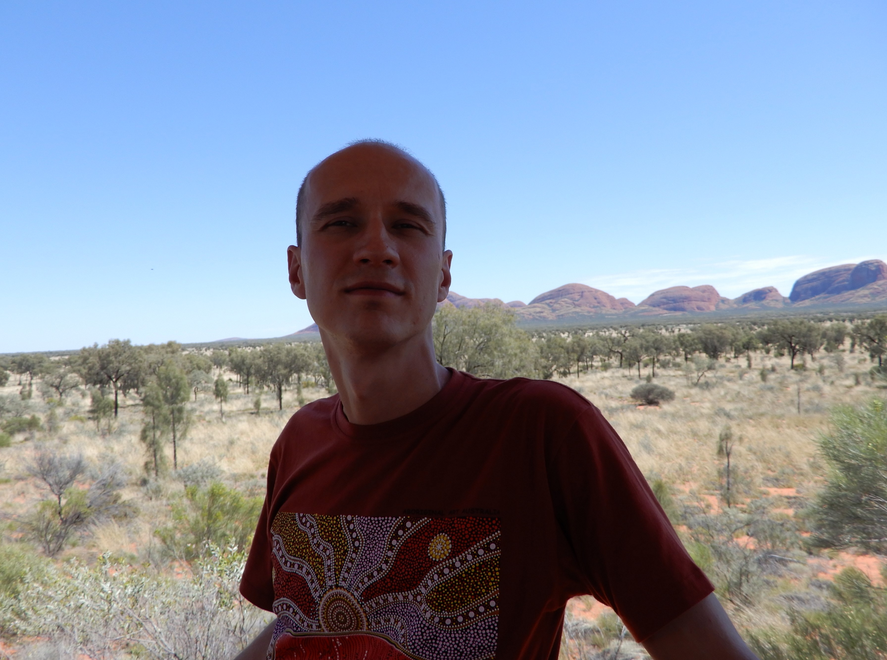

Ta strona poświęcona jest temu co zostało we mnie po podróży do Outbacku jesienią 2017r. Australia to odcięty od reszty świata kontynent, z całkowicie niespotykanymi gdziekolwiek indziej krajobrazami, które wypełniają najdziwniejsi przedstawiciele fauny i flory, z kangurami na czele. Australia kojarzy się z rafą koralową, tropikami, plażami, oceanem, wielkimi miastami, dziwną i czasami przerażającą historią. Jednak serce Australii to Outback. Outback to pustkowie bezkres czerwonej, rozgrzanej ziemi, którą widać aż za horyzont. idealne miejsce dla chcących poczuć nieskrępowaną wolność, ciszę i spokój, a przy okazji spotkać kangury.
Pierwszy był koń
Do Australii poleciałem z myślą o tym żeby jak najszybciej zobaczyć kangury na wolności, w ich naturalnym, outbackowym (pustynnym) środowisku. Pierwsze byył konie… Wydawały się żyć na swolności, nigdzie nie było widać płotów, granic, niczego, nic nie było widać oprócz niskich drzew, krzaków, czegoś w rodzaju traw, fioletowych kwiatów (była tamtejsza wiosna), czerwonej ziemi i koni. Zero ludzi, jakichkolwiek zabudowań. Piękne stado, nie wiem czy dzikich, ale na pewno dziko wyglądających koni przywitało mnie na australijskim outbacku. Nie tak do końca… najpierw przywitało mnie stado namolnych much, wchodzących dosłownie wszędzie.

Gołębie
Gołąb australijski (nazwa wymyślona przeze mnie), czyli papuga. Było ich pełno, nawet na outbacku gdzie nie ma nic, gdzie jest tylko cisza i pustka, a na głównej (jedynej) drodze przecinającej Australię z północy na południe auto mijamy raz na pół godziny. Podchodziły do nas i obserwowały nas, niektóre nawet dobierały się do naszego jedzenia, niektóre szare inne kolorowe, ale wszystkie cudne i głośne i o dziwo tam gdzie były papugi nie było much… czyżby dla małych muszek były zagłośne?
Jaszczurki
Tam gdzie były jaszczurki były też i muchy. Z reguły jaszczurki wyglądały jak te znane z europejskich krajów, jednak to czego się nie spodziewałem to zobaczyć jaszczurkę siedzącą sobie dostnojnie wysoko na gałęzi. Spotkań z jaszczurkami było więcej, w pamięci najbardziej jednak została pewna duża i dostojna sztuka ... ale to już temat na inną opowieść.
Kangury
I wreszcie wyczekiwane, długo wypatrywane, widziane na filmach i w zoo KANGURY!!! Przejechaliśmy ponad 300 km outbacku i ani śladu żywych kangurów… Pełno zabitych kangurów. Niestety kangury lgną do światła jak muchy… i to je gubi. W Australii panuje zwyczaj, że o zmierzchu już się nie jeździ autami, żeby kangury nie wpadły na pomysł podążania w stronę światła, ale nie wszyscy mogą / chcą przystanąć gdzieś na noc i często się to kończy źle, zwłaszcza dla zwierzęcia, aczkolwiek parę porzuconych wraków samochodów z rozwalonym przodem też obok kangurów było widać na poboczach. Zdesperowani zjechaliśmy na czyjąś (jak się później okazało) „czerwoną” drogę, żeby coś przekąsić. W trakcie posiłku właściciel swoim mało zrozumiałym australijskim akcentem pyta się co tu robimy i dlaczego stoimy na jego drodze. Zrobiliśmy głupie miny i gdy już mieliśmy odjeżdżać, coś mi przed oczami zaczęło skakać, wszystkim zaczęło skakać i to nie było z przejedzenia tylko to było najprawdziwsze stado kangurów żyjące na wolności.
Paweł

Najlepszą metodą odkrywania Australii jest doświadczanie konkretnych sytuacji. To co zostało we mnie najgłębiej to właśnie chęć poznania przez doświadczenie. Ta krótka strona to krok w kierunku poznania przez doświadczenie pracy i pasji front-end developera.